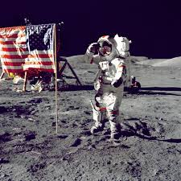
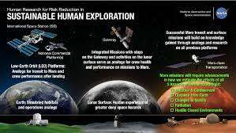

Earth
Information
Center
More than 50 years, NASA satellites have provided data
on Earth's land, water, air, temperature, and climate.
NASA's Earth Information Center allows visitors
to see how our planet is changing in six key areas:
sea level rise and coastal impacts, health and air
quality, wildfires, greenhouse gases,
sustainable energy, and agriculture.
History
To Buy your ticket to mass
Since 1958
Since its inception in 1958, NASA has accomplished many great scientific and technological feats in air and space. NASA technology also has been adapted for many non-aerospace uses by the private sector...
Learn more →Research Leader
NASA remains a leading force in scientific research and in stimulating public interest in aerospace exploration, as well as science and technology in general. Perhaps more importantly, our exploration of space has taught us to view Earth, ourselves, and the universe in a new way...
Learn more →After Apollo
After Apollo, NASA focused on creating a reusable ship to provide regular access to space: the space shuttle. First launched in 1981, the space shuttle flew more than 130 successful missions before being retired in 2011...
Learn more →The Focus
President John F. Kennedy focused NASA and the nation on sending astronauts to the moon by the end of the 1960s. Through the Mercury and Gemini projects, NASA developed the technology...
Learn more →| Planets | History | Research |
|---|---|---|
|  | ||
|  |